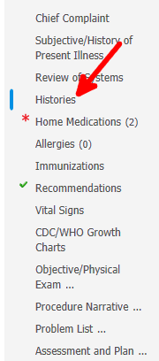
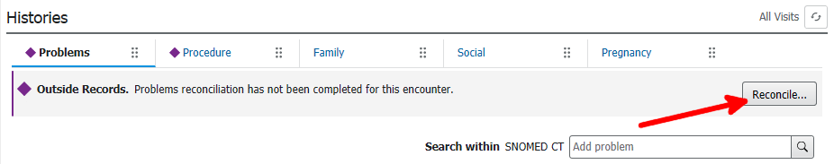
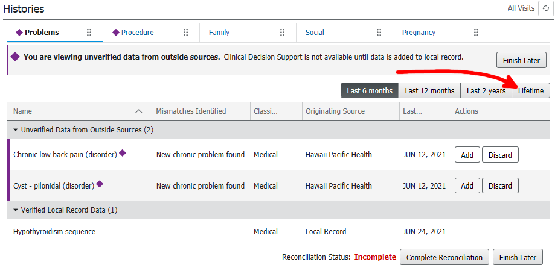
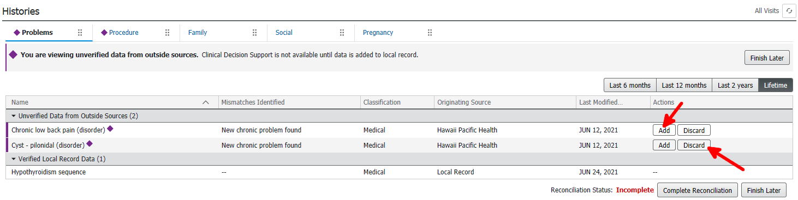
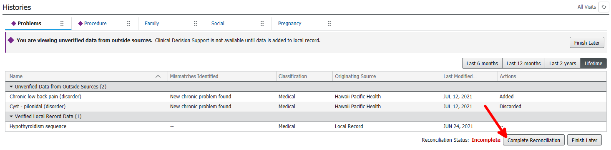
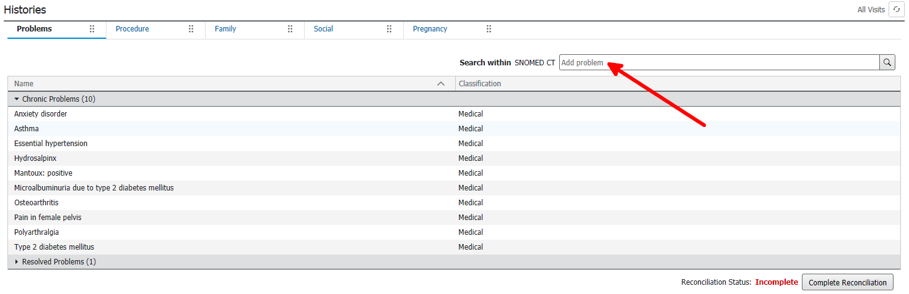
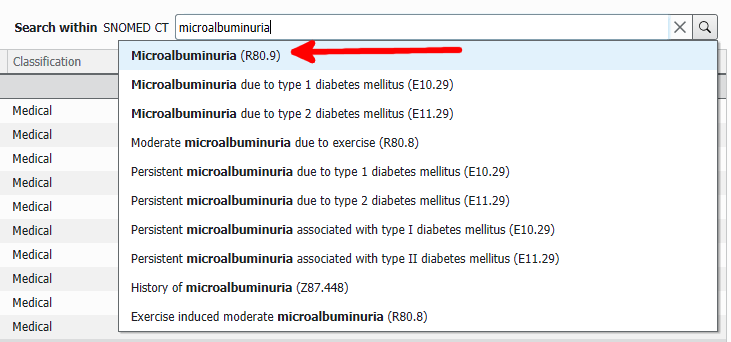
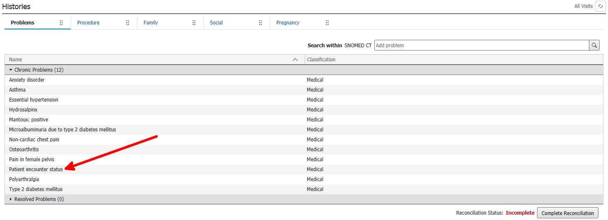
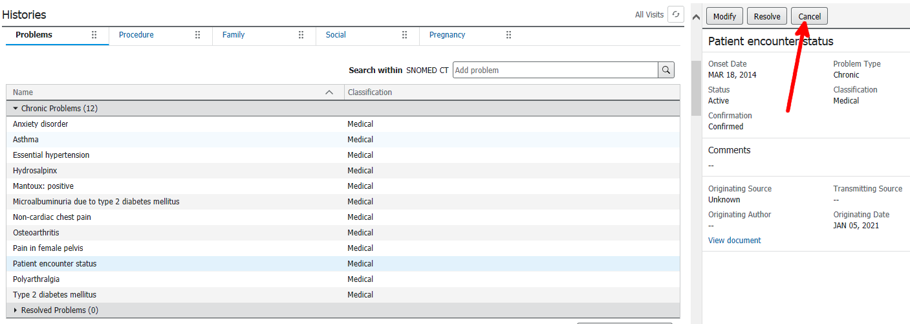
Similar to canceling a diagnosis, but the resolved diagnosis will go to the resolved section. Personally, I don't use this feature much
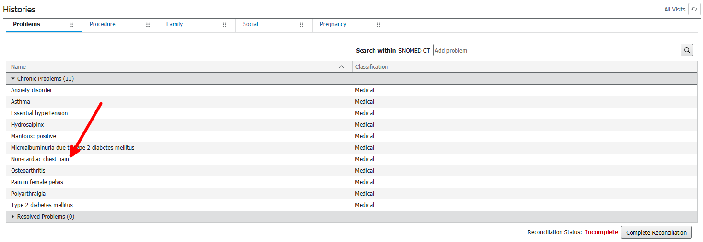
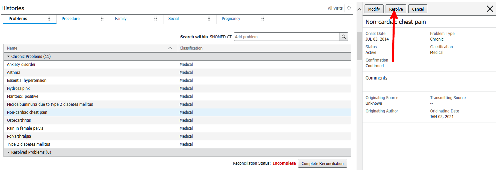
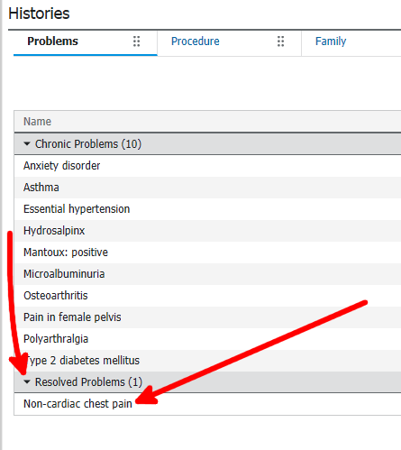
If you have completed a reconciliation, but the purple diamond has not yet gone away, refresh and repeat the reconciliation.
This section is a bit opinionated, but at the very least, avoid duplicates and non-diagnoses in the past medical history
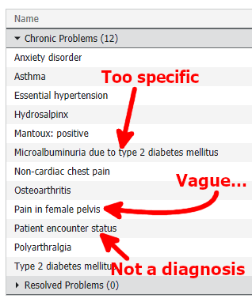
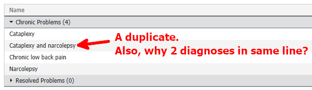
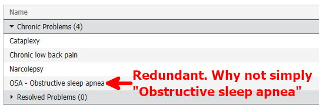
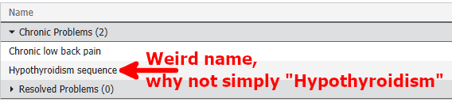